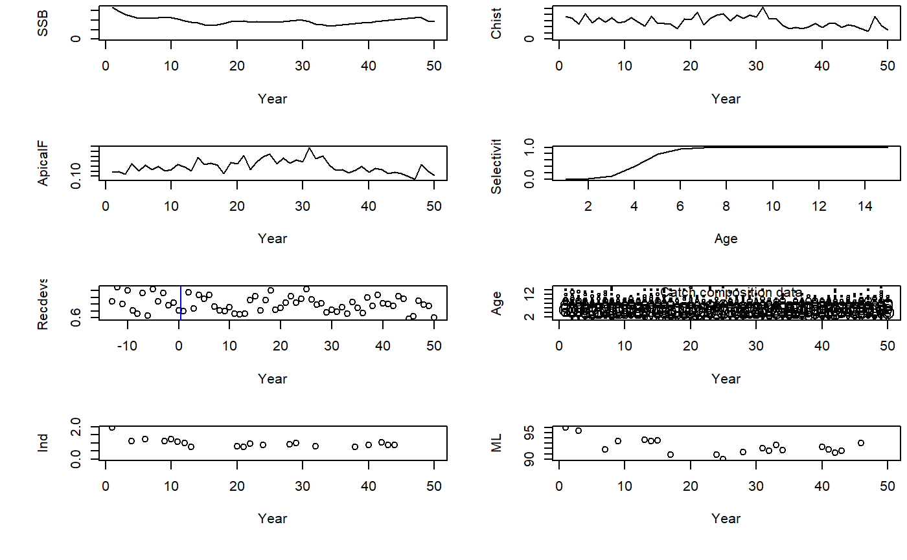

SRAsim.RdCatch at age and catch simulator.
SRAsim(OM, qmult = 0.5, CAApatchy = 0.4, Cpatchy = 1, Ipatchy = 0.4, MLpatchy = 0.4, nCAA = 100, nL = 200, sigmaE = 0.25, sigmaI = 0.1)
| OM | An operating model object with M, growth, stock-recruitment and maturity parameters specified. |
|---|---|
| qmult | Fraction of natural mortality rate that is mean fishing mortality (Fishing catchability multiplier) |
| CAApatchy | The fraction of years that have catch at age data |
| Cpatchy | The fraction of years that have catch data |
| Ipatchy | The fraction of years that have index data |
| MLpatchy | The fraction of years that have mean length data |
| nCAA | The number of independent annual catch at age observations (same among all years) |
| nL | The number of independent annual catch at length observations (same among all years) for calculating mean length |
| sigmaE | Level of simulated interannual variability in effort (F) expressed as a lognormal SD |
| sigmaI | Observation error in relative abundance indices expressed as a lognormal SD |
A list: Chist = historical catch series,Recdevs = historical recruitment deviations (mean = 1), CAA = catch at age matrix, N = numbers at age matrix, SSB = annual spawning biomass, FM = Fishing mortality rate at age matrix, M = natural mortality rate classy
out<-SRAsim(testOM)